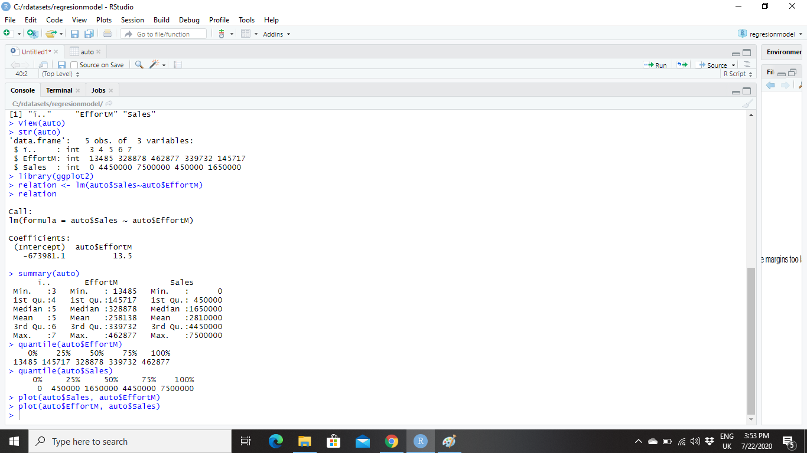
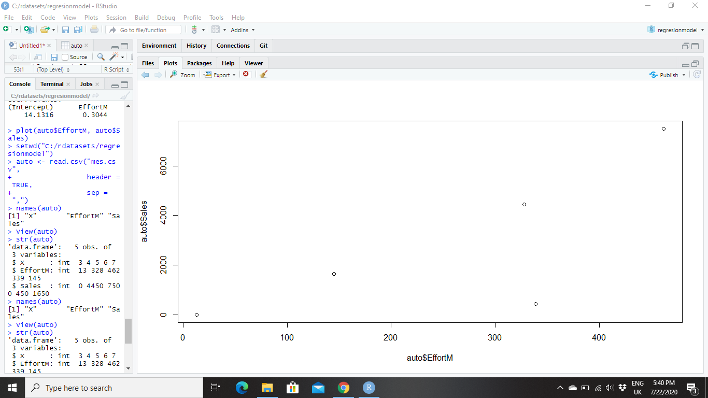

Let’s start with some theory about Lineal Regression and how to perform regression and interpret the results. Here, Y is the predicted value of the outcome variable, β1 is the intercept (where the line crosses the x-axis), each X is the value of a variable, and each β2 is the respective weight assigned to that variable.
Y= β1+β2X+ϵ
In this real exercise, we have some historical transaction data from March to July. For each transaction, we have identified (Sales), the number of units purchase Quantity, the date of the purchase and the Effort in Marketing Digital (EffortM). Basically, I’m going to show you that investment in advertising on the company’s sales (EffortM ) will have an impact in sales growth. In this article, we will use the package R to perform only a simple linear regression.Sales=β0+β1*EffortM+ε
we will use:

Let’s Understand what these important terms and numbers represent.
So we’ve already gleaned some interesting information about our data set. We know the company spends less, on average, on advertising (EffortM) and their ROI is high. Take a look the continuous variable called in this real example (EffortM). So Let me show you a scatter plot of EffortM variable. We have EffortM over here plotted against the dependent variable, which is Sales. Looking at this at the scatter plot, we clearly see that there is seems to be a linear relationship.

So basically this scatter plot tells us that there seems to be a very strong relationship between Sales and between EffortM. In order to verify verify this, the next thing that I do is that I fit a linear regression model. This the output contains.
If we look at the variable EffortM over here, what we see is that the coefficient of EffortM is 13.5 In our case EffortM It's point 13.5, so it's positive. So basically this means that when EffortM increases by one Sales is going to increase by 13.5